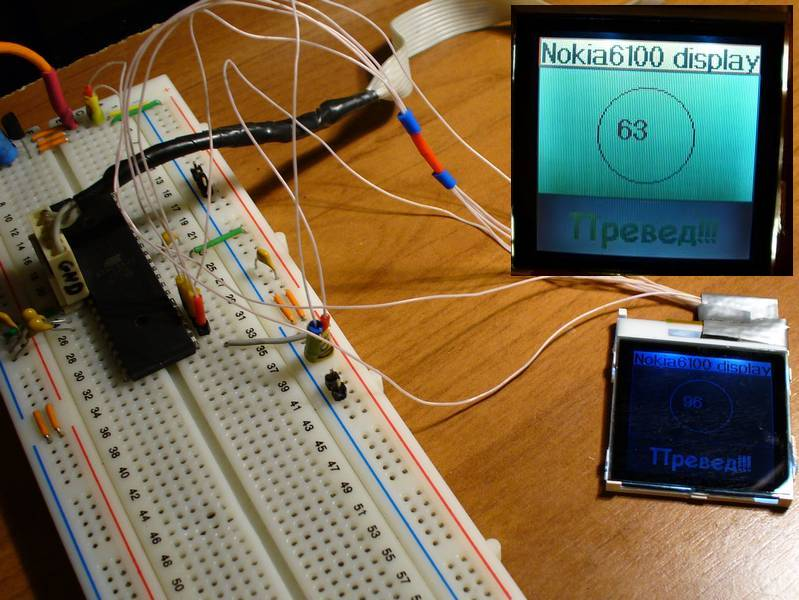
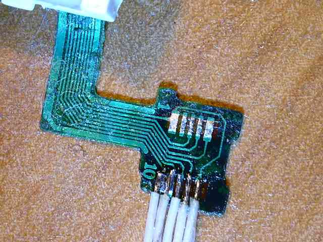
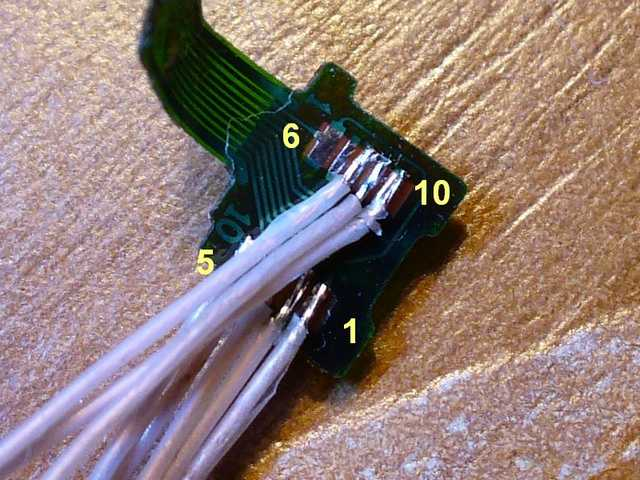

Подключение дисплея от сотового телефона Nokia 6100 к микроконтроллеру AtMega32.
Освоив монохромные дисплеи от Nokia 3310 и Nokia 7710, я решил попробовать цветной дисплейчик. Выбор пал на дисплей от Nokia 6100, как недорогой и достаточно изученный. На мой взгляд, большим преимуществом цветного дисплея (помимо собственно цвета) является наличие встроенной подсветки. С дисплеем от Nokia 3310 я так толком ничего и не придумал. Недостатками же являются необходимость использовать контроллер с б́ольшим количеством памяти (Tiny2313 здесь уже никак не подойдёт), и требование наличия дополнительного напряжения для питания подсветки.
Но главное преимущество — здесь есть где развернуться с точки зрения программирования, а это самое интересное;-)

Покопав интернет, я усвоил, что эти дисплеи бывают с разными контроллерами — от Philips и от EPSON. Определить тип контроллера по внешнему виду можно вот здесь: http://www.electricstuff.co.uk/noklcd.html Но общее правило примерно такое - зелёная плата - EPSON. Мне достался как раз такой, с контроллером EPSON S1D15G10. Даташит есть по ссылке выше.
Насколько мне известно, всемирный разум до сих пор не разгадал, как телефоны Nokia определяют тип подключенного дисплея:)
В принципе, на дисплее присутствует разъём. Но ответной части к нему я не нашёл. Да и не искал особо:) А просто сдул разъём феном, и подпаял проводочки:

Сначала один ряд, а затем и второй:

Потом залепил всё это скотчем, и стала красота.
Номера ног видны на фото выше. Обратите внимание, что в моём случае напечатанный номер на шлейфе не совпал с общепринятой распиновкой. Хорошо, что я это разглядел.
Распиновка такая:
| Нога | Назначение | Описание |
|---|---|---|
| 1 | VDD | 3.3в |
| 2 | RESET | Сброс, активный ноль |
| 3 | SDIN | Serial Data In |
| 4 | SCK | Serial Clock |
| 5 | CS | Chip Select |
| 6 | VLCD | Питание LCD (у моего дисплея соединено с VDD) |
| 7 | Не используется | |
| 8 | GND | Земля |
| 9 | LED- | Минус питания подсветки |
| 10 | LED+ | Плюс питания подсветки (требуется порядка 6 в) |
Схему я как всегда не рисовал. Питание дисплея подключил к 3.3в, питание подсветки - к 6в. Остальные 4 ноги - к ногам Mega32. Сначала к произвольным, затем задействовал аппаратный SPI. С аппаратным SPI получилось немного быстрее.
Mega32 питается также от 3.3в.
Программа написана на Си, использован компилятор avr-gcc.
Для использования программного SPI надо в файле nokia6100.c раскомментировать строчку
#define USE_SOFT_SPI (1)
В этом случае для подключения дисплея можно использовать любые ноги, надо только их прописать в этом файле.
Вот архив с проектом: nokia6100-mega32.zip.
Шрифты я делал замечательной немецкой программой Font.exe.
Скачать её можно вот здесь
(качать файл FontEditor_BitmapConverter.zip). Я не пользовался упаковкой шрифтов,
поэтому при изготовлении своего шрифта птичку "compress Font" надо снять.
Страница обновлена 30 января 2011г.